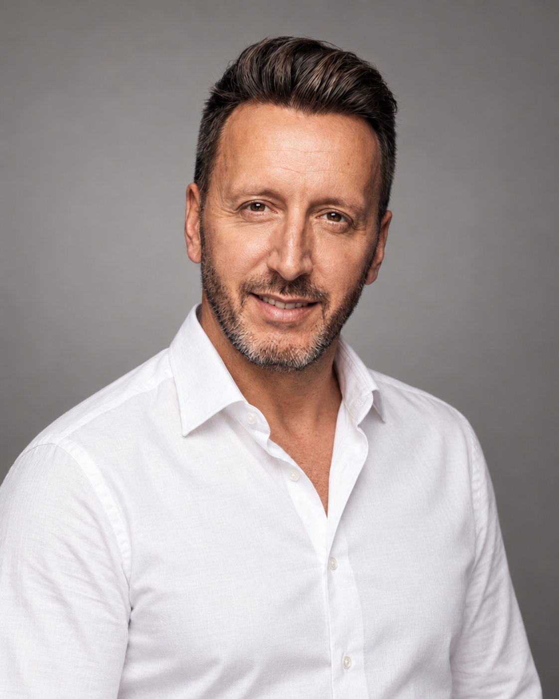

Vingt-cinq ans de vente et de développement commercial pour comprendre vite votre business, trouver ce qui bloque, et le débloquer moi-même.

Qui je suis, ce que je sais faire, et pourquoi on devrait se parler. Plutôt qu'un CV de deux pages.
Trois situations que je rencontre chez presque tous les dirigeants que je croise.
Des rendez-vous, des démos, des prospects intéressés. Et à la fin du mois, les signatures ne sont pas là. Personne n'aide vos clients à décider.
Le produit est bon, mais le discours change selon qui le présente. Les objections reviennent toujours au même endroit, et personne ne les traite à la racine.
La stratégie, l'offre, les démos, le suivi. Vous avez besoin de quelqu'un qui pense avec vous, puis qui exécute sans qu'on lui tienne la main.
Dites-moi où ça coince, je vous dis par quoi je commencerais. Sans formulaire, sans e-mail à laisser.
Pas seulement des recommandations. J'aime comprendre, construire et exécuter.
Ce qui marche, ce qui bloque, ce qui coûte. Un diagnostic net, sans rapport de cinquante pages.
Là où vos prospects hésitent, là où vos partenaires ne produisent plus, là où le cycle s'allonge.
Un discours qui tient face aux objections réelles, construit avec vos équipes produit et technique.
Partenariats, prescripteurs, canaux digitaux et IA pour générer un flux de demandes entrantes qualifiées, puis les convertir.
Des démos qui deviennent des contrats. Écoute, traitement des freins un par un, conclusion sans forcer.
Animer, consolider et faire grandir vos comptes existants et votre réseau de partenaires. Rétention, satisfaction, chiffre : les trois en même temps.
Prendre de la hauteur, tout en restant profondément opérationnel.
Votre marché, vos clients, votre offre, vos chiffres. Je pose des questions, j'écoute, je regarde ce qui se passe vraiment sur le terrain.
La bonne réponse au bon endroit : une offre, un discours, un canal, un process. Avec vos équipes, pas à côté.
Je prends les rendez-vous entrants, je fais les démos en visio, je signe, je fais produire le réseau. Les résultats se mesurent, pas les intentions.
Vingt-cinq ans au contact des clients, des équipes et des dirigeants.
Offre et argumentaire construits avec l'équipe technique ; vendu aux agences, réseaux de mandataires et promoteurs, avec le suivi des premiers clients.
Apport d'affaires pour un réseau d'immobilier commercial, en lien avec des foncières et des apporteurs. En parallèle, montage de mon propre immeuble de coliving à Bordeaux : achat du foncier, travaux, exploitation.
Création de la fonction commerciale, vente de la solution aux agences et promoteurs.
Accompagnement de particuliers et d'investisseurs du premier rendez-vous jusqu'au notaire, puis dans la durée. Partenariats promoteurs, réseau d'apporteurs animé au quotidien.
Conseil en investissement immobilier auprès de particuliers.
Accompagner, écouter, rassurer, faire décider, puis rester présent après la signature. Vingt-cinq ans à suivre des clients et des partenaires dans la durée, sur des décisions qui comptent pour eux. C'est ce qui fait un bon customer success manager, et c'est ce que je préfère faire.
Un poste ou une mission. Sur place à Bordeaux, ou à distance partout en France.
Ouvert à toute proposition. Un poste si le projet le mérite, une mission si vous préférez commencer comme ça : ce qui compte, c'est le résultat, pas le contrat.
Tout de suite. Un premier échange de 15 minutes cette semaine, un démarrage dans la foulée.
Sur place à Bordeaux et en Nouvelle-Aquitaine, à distance partout en France. Les démos, le closing et le suivi se font très bien en visio depuis trois ans.
Je l'utilise tous les jours : préparation de rendez-vous, qualification, relances, synthèses, agents. Et j'ai vendu pendant trois ans un logiciel qui en est fait.
Non. Mon terrain, c'est le lead entrant, chaud ou qualifié : particuliers ou professionnels, en visio ou par téléphone, jusqu'à la signature. Générer le flux, oui, par les partenariats, les prescripteurs et les canaux digitaux. Taper dans le dur, ce n'est plus mon rôle.
Choisissez votre porte d'entrée : un créneau dans mon agenda, un message WhatsApp, ou un e-mail. Pas de pitch, pas d'engagement, réponse sous 24 h.